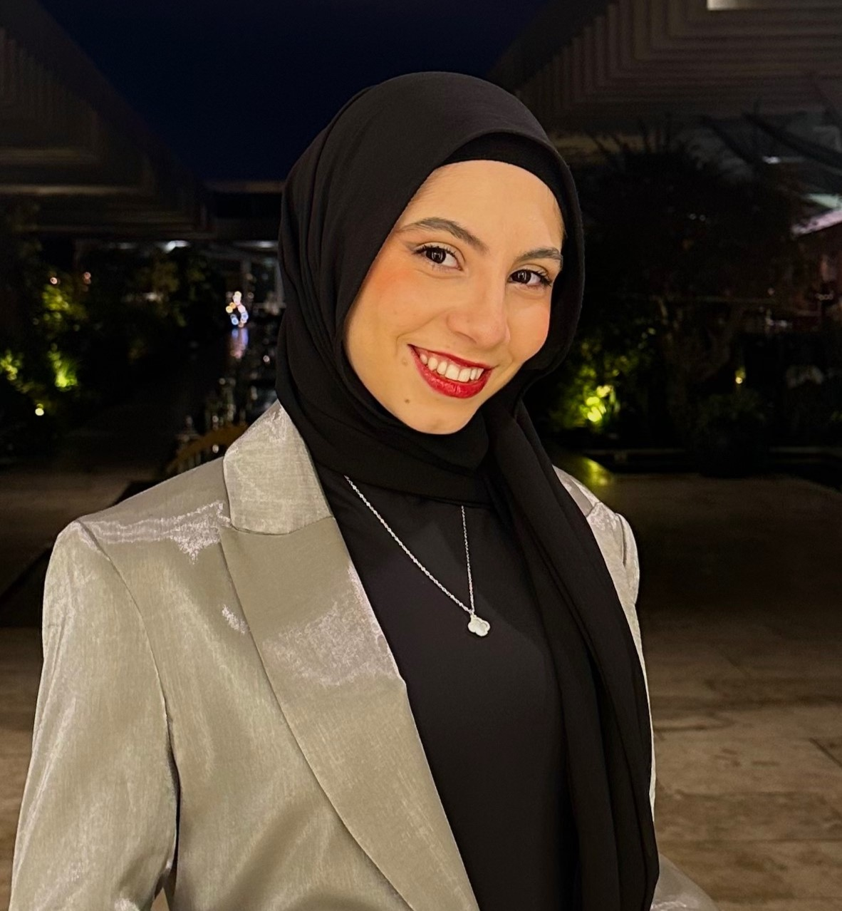

Building production ML systems, computer vision pipelines, autonomous perception, and cloud-integrated data platforms — from model to deployment to scale.

Open to relocation
Tripoli, Lebanon
I am an AI & ML Engineer with 1.5 years of production experience building end-to-end machine learning systems, computer vision pipelines, and data platforms — deployed on real hardware, connected to real clouds, serving real use cases.
At GlobalDWS, I design and deploy production AI systems combining machine learning, computer vision, backend engineering, and cloud-integrated data pipelines. My work includes building real-time ML inference systems using YOLOv5, OCR, and material classification models on NVIDIA Jetson hardware, engineering scalable FastAPI backends, and developing telemetry and analytics pipelines using Azure Blob, Azure SQL, and IoT Central.
I also contribute to autonomous perception and spatial AI workflows involving LiDAR, depth cameras, and multi-sensor data synchronization for digital twin and intelligent environment applications.
I hold a B.Sc. in Computer Science from the American University of Beirut (USAID Full Scholarship, Dean's Honor List) and completed an exchange semester at Carnegie Mellon University – Qatar focusing on Machine Learning and AI Ethics.
Beyond engineering, I teach robotics and programming to youth through NGOs in North Lebanon — because being able to explain complex systems clearly is as important as building them.
I'm actively open to opportunities in AI engineering, machine learning, computer vision, backend systems, data platforms, analytics, and intelligent automation — across startups, AI teams, and technology-driven organizations.
If you're building production ML systems, perception pipelines, data platforms, or autonomous applications and think there's a fit, I'd love to hear from you.
Available now